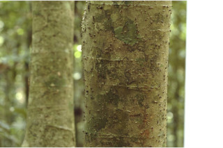
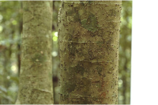
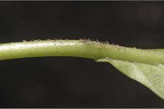
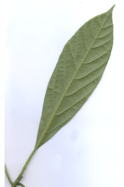
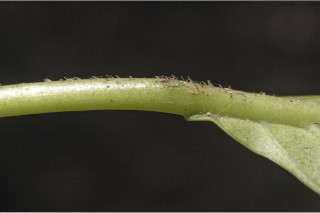
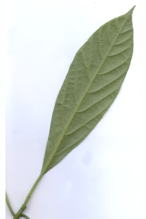

Large shrubs or small trees ca. 5 m tall.
ದೊಡ್ಡ ಗಾತ್ರದ ಪೊದೆಗಳು ಅಥವಾ ಅಂದಾಜು 5 ಮೀ. ಎತ್ತರದವರೆಗಿನ ಮರಗಳು.
Large shrubs or small trees ca. 5 m tall.
பெரிய குத்துச்செடி அல்லது சிறிய மரம், 5 மீ. உயரம் வரை வளரக்கூடியது.
Bark white, smooth, lenticellate; blaze whitish.
ತೊಗಟೆ ಬಿಳಿ ಬಣ್ಣದಲ್ಲಿದ್ದು,ವಾಯು ವಿನಿಮಯ ಬೆಂಡು ರಂಧ್ರಗಳ ಸಮೇತವಿರುತ್ತದೆ.ಕಚ್ಚು ಮಾಡಿದ ಜಾಗ ಬಿಳಿ ಛಾಯೆ ಹೊಂದಿರುತ್ತದೆ.
Bark white, smooth, lenticellate; blaze whitish.
மரத்தின் பட்டை வெள்ளை நிறமானது, வழுவழுப்பானது, பட்டைத்துளைகள் (லெண்டிசெல்லேட்) உடையது; உள்பட்டை வெள்ளை நிறமானது.
Branchlets terete with glandular stinging hairs.
ಕಿರುಕೊಂಬೆಗಳು ದುಂಡಾಗಿದ್ದು,ರಸಗ್ರಂಥಿಗಳ ಸಮೇತವಾದ ತುರಿಕೆ ಬರಿಸುವ ರೋಮಗಳಿಂದ ಕೂಡಿರುತ್ತವೆ.
Branchlets terete with glandular stinging hairs.
சிறியநுனிக்கிளைகள் குறுக்குவெட்டுத் தோற்றத்தில் வளையமானது, அரிப்பு ஏற்படுத்தக்கூடிய சுரப்பி உரோமங்களுடையது.
Leaves simple, alternate, spiral; stipule caducous and leaving scar; petiole 2-6 cm long, terete, with glandular stinging hairs; lamina 9.5-34 x 2-11.5 cm, narrow oblanceolate to elliptic, apex acuminate, base attenuate-cuneate to obtuse, margin subentire or crenulate, coriaceous, with glandular stinging hairs; midrib raised above; secondary_nerves 8-11 pairs; tertiary_nerves distantly obliquely percurrent.
ಎಲೆಗಳು ಸರಳವಾಗಿದ್ದು ಪರ್ಯಾಯ ಮತ್ತು ಸುತ್ತು ಜೋಡನಾ ವ್ಯವಸ್ಥೆಯಲ್ಲಿರುತ್ತವೆ;ಕಾವಿನೆಲೆಗಳು ಉದುರುವ ಮಾದರಿಯಲ್ಲಿದ್ದು ಉದುರಿ ಹೋದ ನಂತರ ಗುರುತುಗಳನ್ನು ಉಳಿಸುತ್ತವೆ;ತೊಟ್ಟುಗಳು 2- 6 ಸೆಂ.ಮೀ.ವರೆಗಿನ ಉದ್ದವಿದ್ದು,ದುಂಡಾಗಿರುತ್ತವೆ, ರಸಗ್ರಂಥಿಗಳ ಸಮೇತವಾದ ತುರಿಕೆ ಬರಿಸುವ ರೋಮಗಳಿಂದ ಕೂಡಿರುತ್ತವೆ;ಪತ್ರಗಳು 9.5–34(-23) X2– 11.5 ಸೆಂ.ಮೀ. ಗಾತ್ರ, ಸಂಕುಚಿತ ಬುಗುರಿಯಿಂದ ಚತುರಸ್ರದವರೆಗಿನ ಆಕಾರ ಹೊಂದಿದ್ದು, ಕ್ರಮೇಣ ಚೂಪಾಗುವ ತುದಿ, ಒಳಬಾಗಿದ – ಬೆಣೆಯಾಕಾರದಿಂದ ಚೂಪಲ್ಲದ ಮಾದರಿವರೆಗಿನ ಬುಡ, ಉಪ-ನಯವಾದ ಅಥವಾ ಸೂಕ್ಷ್ಮ ದುಂಡೇಣಿನ ಅಂಚು ಹೊಂದಿದ್ದು, ರಸಗ್ರಂಥಿಗಳ ಸಮೇತವಿರುವ ತುರಿಕೆ ಬರಿಸುವ ರೋಮಗಳಿಂದ ಕೂಡಿದ ತೊಗಲನ್ನೋಲುವ ಮೇಲ್ಮೈ ಹೊಂದಿರುತ್ತವೆ;ಮಧ್ಯನಾಳ ಪತ್ರದ ಮೇಲ್ಭಾಗದಲ್ಲಿ ಮೇಲೆದ್ದಿರುತ್ತದೆ; ಎರಡನೇ ದರ್ಜೆಯ ನಾಳಗಳು 8 ರಿಂದ 11 ಜೋಡಿಗಳಿದ್ದು,ಅಗ್ರದ ಕಡೆಗೆ ಆರೋಹಣವಾಗುವ ಮಾದರಿಯಲ್ಲಿರುತ್ತವೆ; ಮೂರನೇ ದರ್ಜೆಯ ನಾಳಗಳು ಅಂತರ ಹೊಂದಿದ್ದು, ಓರೆಯಾಗಿ ಎಲೆಯ ದಿಂಡಿಗೆ ಅಡ್ಡವಾಗಿ ಕೂಡುವ ಮಾದರಿಯಲ್ಲಿರುತ್ತವೆ.
Leaves simple, alternate, spiral; stipule caducous and leaving scar; petiole 2-6 cm long, terete, with glandular stinging hairs; lamina 9.5-34 x 2-11.5 cm, narrow oblanceolate to elliptic, apex acuminate, base attenuate-cuneate to obtuse, margin subentire or crenulate, coriaceous, with glandular stinging hairs; midrib raised above; secondary_nerves 8-11 pairs; tertiary_nerves distantly obliquely percurrent.
இலைகள் தனித்தவை, மாற்றுஅடுக்கமானவை, சுழல் போன்று அமைந்தவை; இலையடிச்செதில் எளிதில் உதிரக்கூடியது மற்றும் தழும்புகளை ஏற்படுத்துகின்றன; இலைக்காம்பு 2-6 செ.மீ. நீளமானது, குறுக்குவெட்டுத் தோற்றத்தில் வளையமானது, அரிப்பு ஏற்படுத்தக்கூடிய சுரப்பி உரோமங்களுடையது; இலை அலகு 9.5-34 X 2-11.5 செ.மீ., குறுகிய தலைகீழ் ஈட்டி வடிவானது முதல் நீள்வட்ட வடிவானது, அலகின் நுனி அதிக்கூரியது, அலகின் தளம் அட்டனுவேட்-ஆப்பு வடிவானது முதல் மெட்டையானது, அலகின் விளிம்பு கிட்டதட்ட முழுமையானது அல்லது சிறிய பிறை போன்ற பற்களுடையது, கோரியேசியஸ், அரிப்பு ஏற்படுத்தக்கூடிய சுரப்பி உரோமங்களுடையது; மையநரம்பு மேற்புறத்தில் அலகின் பரப்பைவிட உயர்ந்து இருக்கும்; இரண்டாம் நிலை நரம்புகள் 8-11 ஜோடிகள்; மூன்றாம் நிலை நரம்புகள் தளம் நோக்கிய இணையான அகன்ற பெர்க்கரண்ட்.
Inflorescence axillary panicles, drooping, to 20 cm long; flowers unisexual, subsessile.
ಪುಷ್ಪಮಂಜರಿ ಅಕ್ಷಾಕಂಕುಳಿನಲ್ಲಿನ ಪುನರಾವೃತ್ತಿಯಾಗಿ ಕವಲೊಡೆಯುವ ಮಾದರಿಯ ಮಂಜರಿಯಲ್ಲಿದ್ದು ಜೋತಾಡುತ್ತಿರುತ್ತವೆ ಹಾಗೂ 20 ಸೆಂ.ಮೀ.ವರೆಗಿನ ಉದ್ದ ಹೊಂದಿರುತ್ತವೆ; ಹೂಗಳು ಏಕಲಿಂಗಿಗಳಾಗಿದ್ದು ಉಪ-ತೊಟ್ಟುಸಹಿತವಾಗಿರುತ್ತವೆ.
Inflorescence axillary panicles, drooping, to 20 cm long; flowers unisexual, subsessile.
மஞ்சரி இலைக்கோணங்களில் காணப்படுபவை பேனிக்கிள் வகை மஞ்சரி, தெங்கியவை, 20 செ.மீ. நீளமானது; மலர்கள் ஓர் பாலானவை, காம்பற்றது அல்லது மிகச்சிறிய காம்புடையது.
 



 


